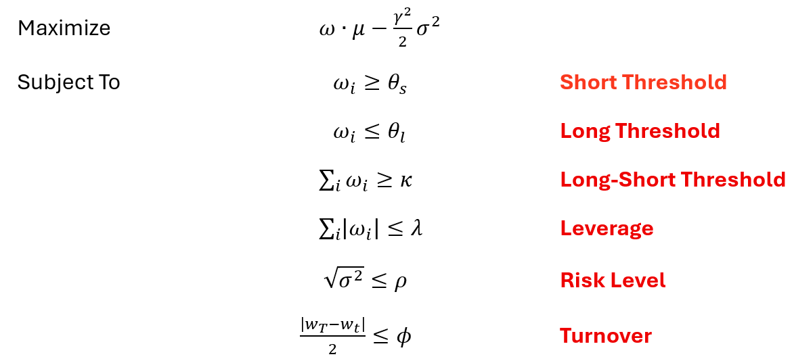
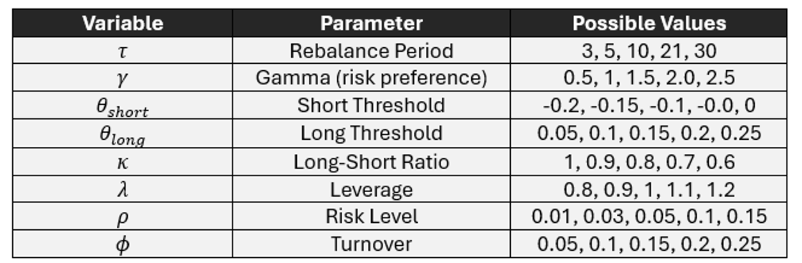
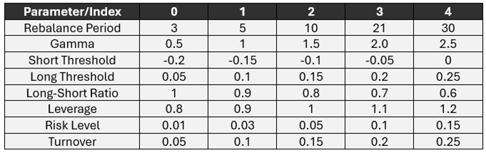

Robo-Advisor Portfolio Optimization
Automated Portfolio Recommendations with Utility Maximization • Arp 2025 - May 2025
Project Overview
This project develops a comprehensive Robo-Advisor demo that helps users generate optimized stock portfolios based on their risk preferences and return targets. The system simulates traditional utility-maximization strategies and implements a front-end tool that visualizes optimized portfolios and performance metrics.
Introduction and Objectives
The Robo-Advisor module aims to automate personalized portfolio recommendations using conventional investment principles:
- Utility Maximization - Simulates investor preferences using a utility function based on risk and return
- Mean-Variance Optimization (MVO) - Constructs portfolios to maximize expected utility
- User Personalization - Supports varying risk preferences and return targets via a web interface
The final system demonstrates how technical parameter choices and behavioral biases can impact investment outcomes.
Methodology
1. Utility-Based Portfolio Construction & Configuration
We model the investor's objective using a utility function for portfolio optimization:
Various combinations of technical parameters are tested to simulate portfolio configurations:
A scatter plot shows the top 100 performers out of 5,000 sampled portfolios, with comparisons to the S&P 500 and equal-weighted portfolios based on Sharpe ratio. For detailed results and analysis, please refer to the IEDA4500 Final Report.
2. User Behavior Simulation & Assessment
To bridge the gap between technical parameters and user-friendly interactions, a comprehensive questionnaire was designed. The assessment covers:
- Personal Investment Goals - Growth strategy and time horizon
- Risk Tolerance - Comfort level with market fluctuations (conservative to aggressive)
- Financial Situation - Saving habits, cash flow, and capital base
- Investment Preferences - Target return, rebalance period, and diversification
A parameter index table is initialized using technical parameters, with user responses mapped to derive portfolio configurations:
The detailed mapping rules can be found in the IEDA4500 Final Report.
3. App Demonstration
New users complete an intuitive questionnaire to initialize technical parameters:
Users can fine-tune settings based on their investment insights:
Portfolio performance is visualized across rebalance periods:
Technology Stack
Limitations and Potential Improvements
- Sensitivity Analysis - More systematic evaluation of how each parameter impacts performance is needed
- Adaptive Tuning - Use of heuristics or advanced optimization (e.g., evolutionary algorithms) could improve portfolio quality
- Data Expansion - The current stock universe is limited. Including more assets or asset classes would improve real-world realism
Repository
Find the source code and report:
View Repository on GitHubLicense
This project is open-source and available under the MIT License.